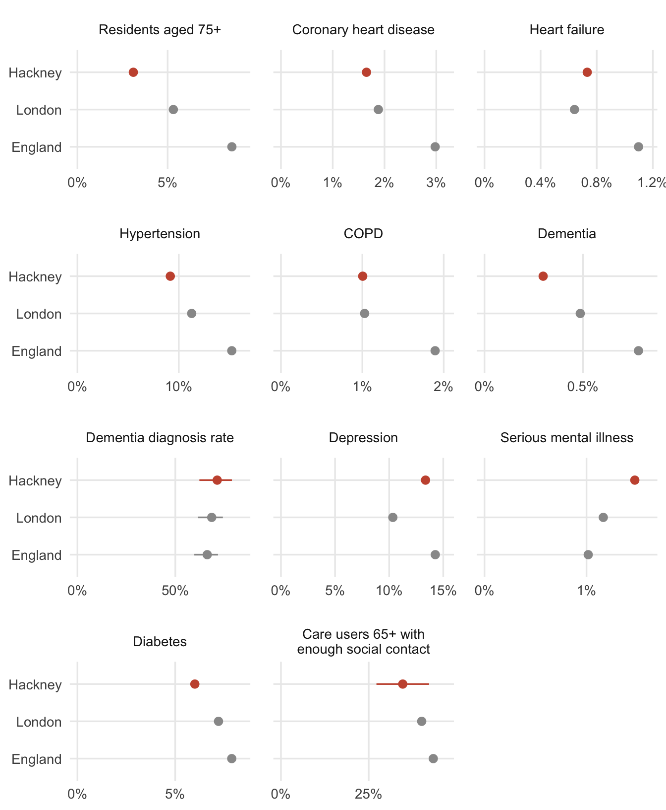

One-sentence finding goes here, written last.
Residents aged 75+
–
People aged 66+ living alone
–
Hot neighbourhoods with many residents aged 75+
X of Y
| Indicator | Period | Hackney | England | Compared with England | Recent trend |
|---|---|---|---|---|---|
| Dementia diagnosis rate | – | – | – | – | – |
| Depression | – | – | – | – | – |
“Higher”, “similar” and “lower” are Fingertips’ comparisons with England. Only the dementia diagnosis rate and social contact are rated “better” or “worse”. GP-recorded prevalence is crude.

Panels named after a condition show the share of GP-registered patients with that diagnosis. These rates are crude (not age-standardised), so Hackney’s young population lowers them.
Social contact is from 2019/20, the latest year with a Hackney value.
Trend panels go here: the same indicators as lines for Hackney, London and England, broken where a register definition changed.
Age has no trend because it comes from a single census.
Dot chart goes here: every London borough sorted by value, Hackney highlighted and named, London average line and shaded typical range.
Two sentences go here: what the intervals mean, and that the funnels compare Hackney with every other London borough.
Interactive LSOA map goes here, with surface temperature and tree cover as layers you switch between.
Satellites measure how hot surfaces get, not the air people feel. Tree cover data are from 2013.
Scatter of surface temperature against IoD 2025 score goes here, one point per LSOA.
Line chart of days above 25°C per year since 1960 goes here, averaged over the HadUK-Grid cells covering Hackney.
Interactive bivariate map goes here: surface temperature against share aged 75+, with care homes and cool spaces as points you can switch on and off.
This shows where hot neighbourhoods and older residents coincide, not which residents are actually exposed.
3×3 bivariate legend goes here.
One sentence on what the darkest corner means, and that “hot” and “older” are relative to the rest of Hackney.
| Source | What it gives | Period | Geography | Licence |
|---|---|---|---|---|
| OHID Fingertips | GP-recorded prevalence, dementia diagnosis rate, social contact | Varies by indicator | Borough | Open Government Licence |
| Census 2021 (Nomis) | Age, older people living alone | 2021 | LSOA | Open Government Licence |
Remaining rows from the plan’s data sources table go here.
Confidence intervals. What the 95% interval means, in two or three sentences.
Funnel plots and overdispersion. How the limits are drawn, why they’re widened, and why only two indicators get a funnel.
Crude rates. Why GP prevalence isn’t age-standardised, and what that means in a young borough.
Surface temperature. Which Landsat summer was used, how it’s averaged to LSOAs, and that it measures surfaces rather than air.
Bivariate bands. How the three bands are drawn across Hackney’s LSOAs.
Change of data source. Fingertips is being replaced by Find public health data; which one this dashboard uses.
Code and data: GitHub repo. Write-up: link.